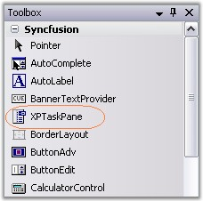
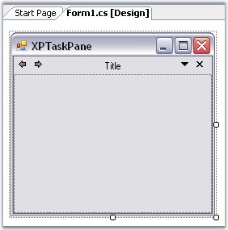
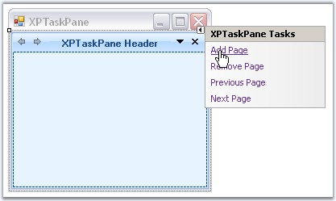
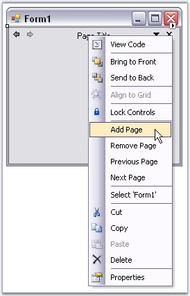
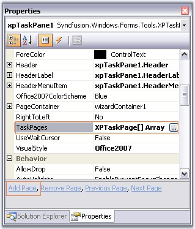
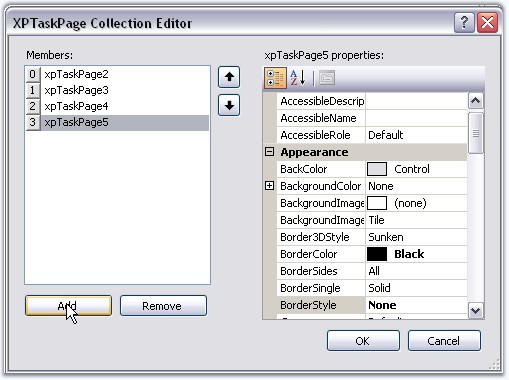
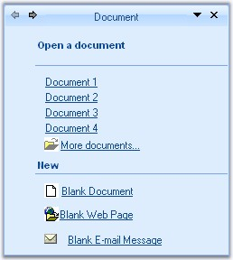

This section demonstrates how to create a simple XPTaskPane.

Figure 1243: XPTaskPane in Toolbox
· Add the XPTaskPane control to your empty form in the designer and set its Dock property to right.

Figure 1244: XPTaskPane Added to the Form and Docked to Fill
· Add pages to the TaskPane using: "Add Page" option in the smart tag.

Figure 1245: Adding Page Through Smart Tag of XPTaskPane
· Add Page option in context menu of the Header.

Figure 1246: Through Context Menu of Header
· "Add Page" command in Property grid.
· XPTaskPage Collection Editor which can be opened by accessing TaskPages property of the control. You can use Remove page option to remove a page.

Figure 1247: Accessing AddPage Command and TaskPage property to Add Page

Figure 1248: Adding Pages Through XPTaskPage Collection Editor
· The pages can be added programmatically as follows.
|
[C#]
this.xpTaskPane1.TaskPages = new Syncfusion.Windows.Forms.Tools.XPTaskPage[] {this.xpTaskPage1,this.xpTaskPage2, this.xpTaskPage3}; |
|
[VB.NET]
Me.xpTaskPane1.TaskPages = New Syncfusion.Windows.Forms.Tools.XPTaskPage() {Me.xpTaskPage1,Me.xpTaskPage2, Me.xpTaskPage3} |
· XPTaskPane control has properties which controls the appearance and behavior of the Task pane sections. You can set Header text for individual pages using XPTaskPage1.Title property of the task page.
|
[C#]
this.xpTaskPage1.Title = "Document"; |
|
[VB.NET]
Me.xpTaskPage1.Title = "Document" |
· Change the LayoutName property of a task page to a custom name. This name can be used in the SelectedPage property of the task pane to refer to a particular page. See XPTaskPage topic.
· Add one or more controls to the task page.

Figure 1249: XPTaskPage with Controls added to Task Page
· Invoke the Add Page verb again in the task pane to add more pages. Repeat the steps above to customize the newly added tab page.
See Also